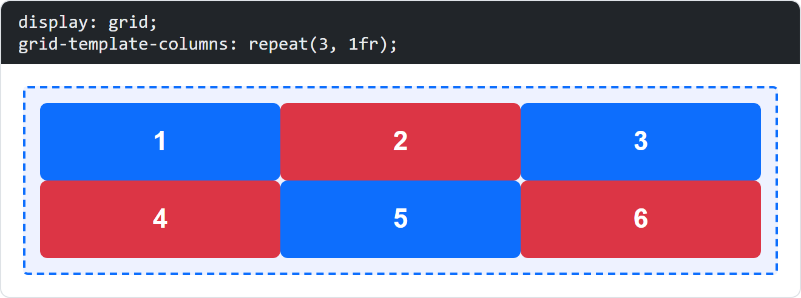
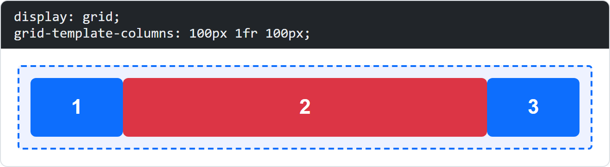
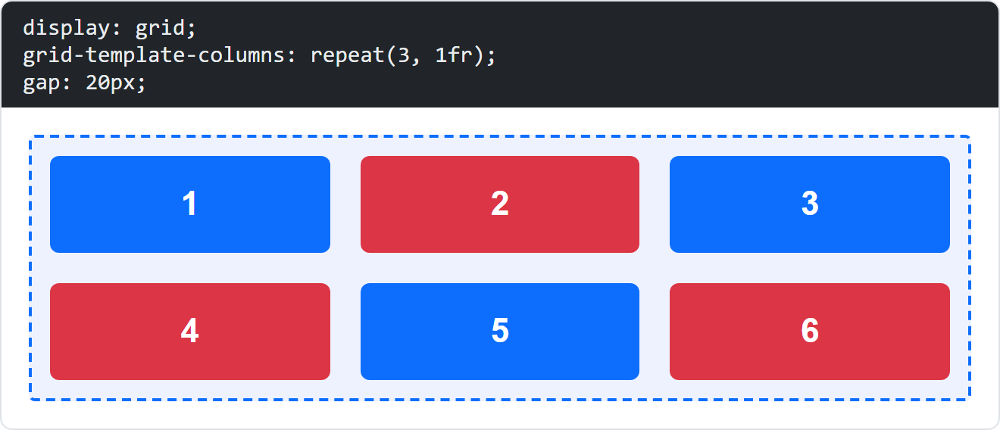
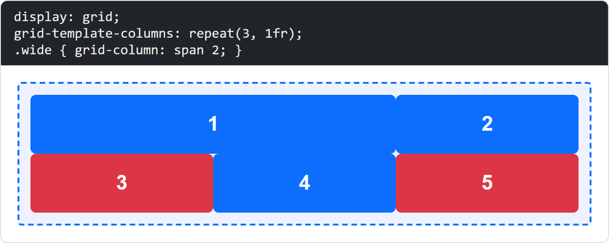
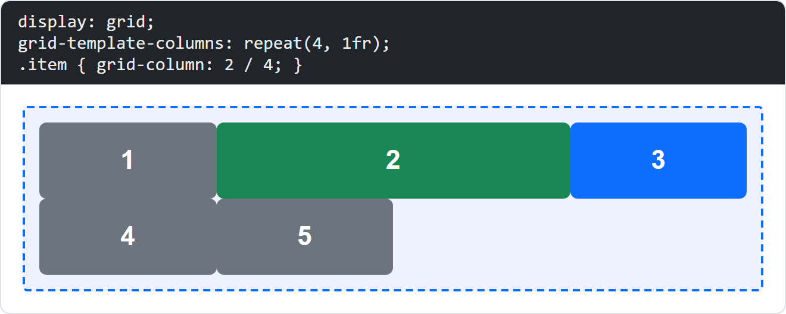
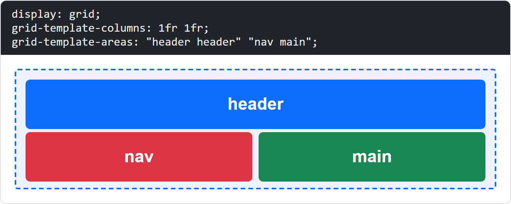
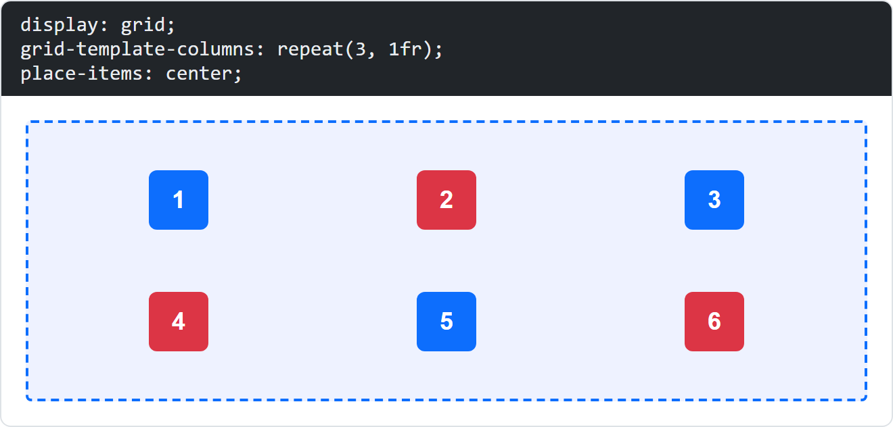
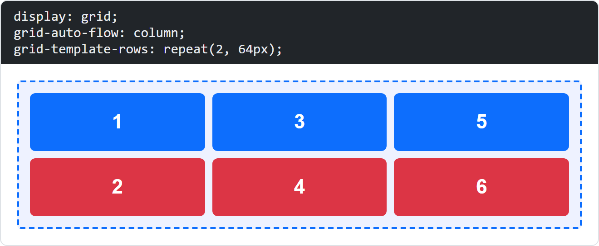
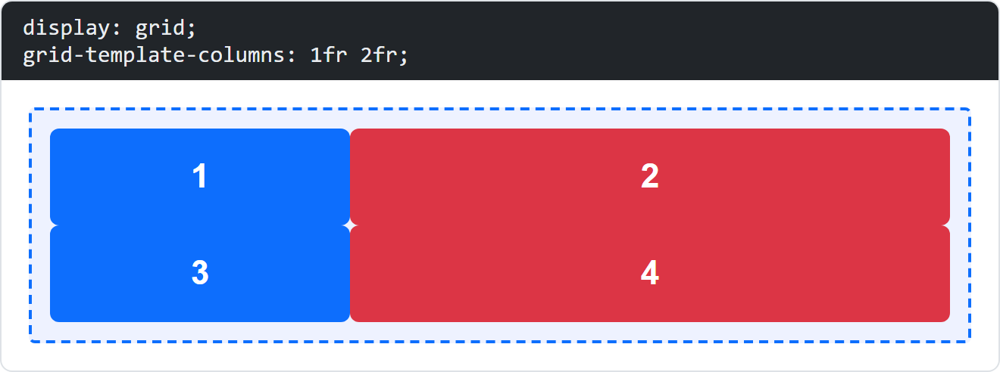
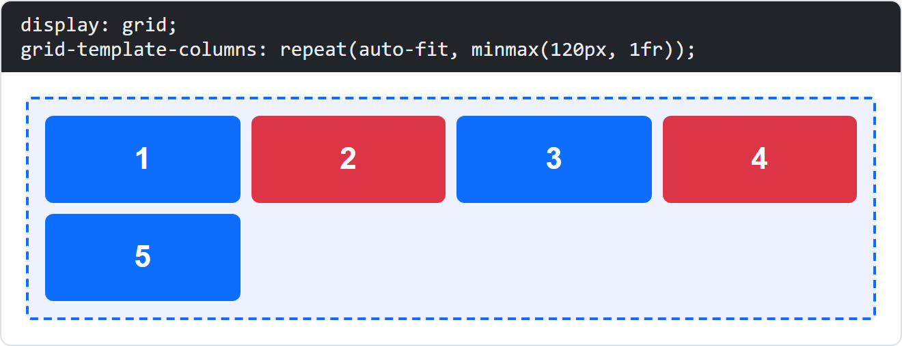

Quiz: CSS Grid
Each question shows a picture of a rendered HTML example (the dashed blue border is the grid container). Choose the declaration that produces the shown layout, then check your answers.
Question 1

The grid has exactly three columns of equal width (the dashed blue border is the grid container). Which declaration creates the three equal columns?
grid-template-columns: repeat(3, 1fr) defines three columns, each taking one equal fraction (1fr) of the available width.
Question 2

The grid has three columns. The outer columns are 100px wide, the middle column fills the remaining space. Which declaration creates this?
The track list 100px 1fr 100px gives the first and last track a fixed width and lets the middle track (1fr) grow to fill the rest.
Question 3

The three columns are equally wide, and there is a 20px space both between the columns and between the rows. Which declaration creates this spacing?
gap sets the spacing between grid tracks (both the column gap and the row gap) without adding space around the outside of the container.
Question 4

Item 1 covers two of the three columns, the other items take one column each. Which declaration on item 1 causes this?
grid-column: span 2 makes the item span two column tracks; the following items are placed after it.
Question 5

The grid has four columns. The green item starts at the second grid line and ends at the fourth grid line, so it covers columns 2 and 3. Which value does grid-column have?
grid-column: 2 / 4 means the item starts at column line 2 and ends at column line 4, i.e. it spans the two tracks between them.
Question 6

The grid has two columns. The header stretches across both columns, and below it nav (left) and main (right) sit side by side. Which declaration places the header across both columns?
The first row of grid-template-areas names "header header", so the header area spans both columns; the second row defines nav and main.
Question 7

Every item sits in the middle of its own grid cell, both horizontally and vertically. Which declaration on the container causes this?
place-items: center is a shorthand that sets align-items and justify-items to center, so each item is centred inside its grid area.
Question 8

The items are filled in column by column: first top to bottom, then the next column. Instead of the default row by row. Which declaration causes this?
grid-auto-flow: column makes the auto-placement fill the grid along the column axis (top to bottom, then the next column).
Question 9

The grid has two columns, and the second column is twice as wide as the first. Which declaration creates this?
The fr unit distributes the free space by ratio. 1fr 2fr means the second column gets twice as much space as the first.
Question 10

As many columns as fit are created automatically. Each column is at least 120px wide and grows to fill the remaining space. Which declaration creates this?
repeat(auto-fit, minmax(120px, 1fr)) creates as many tracks as fit, each at least 120px wide but allowed to grow with 1fr.